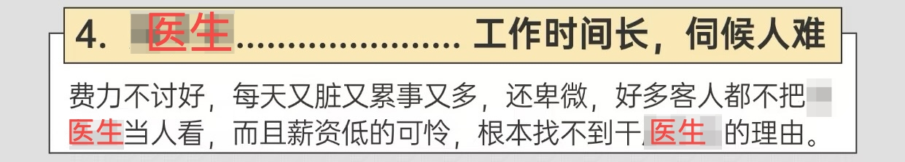

在我免费分享了一些临床指南后，经常有人私信我，好奇我是什么人。
记忆这玩意儿真是不可思议。当我身历其境时，我是一点儿也不去留意那风景。但是，当我回首往事时，我却发现那些风景已经深深地烙印在了我的脑海里。——我在北京读妇产科专硕的时光，就是这样。
四证合一
规培证，三年的血汗换来的，找工作时有一点点帮助，但不多。
临床
在临床当了三年牛马，总结起来，这份工作就是个服务员： 
早上一般七点半前到，中午一般不休息，偶尔能有时间吃午饭，晚上不定时下班，最晚的时候到半夜。
一般不能请假，如果有学校考试实在需要请假，需要自己换值班，请假了就会被人在背后蛐蛐。
白天上班和值班的医生，大多是是专硕和进修医生，很少有本科室的一线，甚至有的科室压根儿没有一线。
一般五六天一个夜班，妇科白班+夜班36小时制，也就是从当天早上到次日晚上下班；产科白班+夜班26小时制，从当天早上到次日上午下班，中间几乎不能休息。
在妇科一半是收病人管病人写病历文书等工作，另一半是在手术室做4助，也是我不够机灵，一直也没学会基本的手术怎么做。
- 持续性拉钩
- 间歇性挨骂
- 赏赐性缝皮
- 阵发性打结
- 多发性换药
在产科，一半是收病人管病人写病历文书等工作，另一半是做测血压、测血糖、胎心监护等护理工作。说来惭愧，虽然已经拿到了妇产科的规培证，但是规培的时候压根儿没见过产科剖宫产手术，更别说上手操作了。
科研
回过头看，科研是最重要的部分，但是这三年几乎没有进行科研工作，位数不多的科研知识和统计学知识也逐渐遗忘，最后只是堪堪达到毕业要求。盘算起原因，一是自己不够努力和重视，二是平时规培实在是太忙太忙了。劝诫后来者以我为反例。
听闻有些医院的专硕可以脱产一段时间，甚至是完全不上临床，全心全意搞科研，最后也能有规培证，最后找工作/申博的时候碾压我们。
工资
- 收入
- 每个月国家+学校+医院补贴大概3000元。
- 值班80元/16个小时，扣税后到手64元。
- 管床：0元。
- 支出：
- 交通费：上班来回地铁+公交+骑车大概8元。
- 吃饭：全自费。
- 租房：医院附近租了一个小单间，价格两千多，没有租房补贴。
- 学费：返还一部分后，净花费几千元。
总结：全靠啃老。
去向
每次去招聘会，感想就是：硕士去死！
把期望拉低，不要想着三甲医院，但即使是三级医院，甚至社区医院，都不好进入，非京户、不是博士、没有关系、科研成果少，每一个都是找工作的拦路虎。
申请博士呢，又是另一番烦恼，光本院专硕就是几十个，但是整个北京的妇产科专博名额都屈指可数，大多数更是名花有主。我就纳闷了，申博的名额屈指可数，找工作的时候又一堆博士，这是怎么回事？
总结
一腔热血进入妇产，三年疲惫草草离场。
这三年，我在北京读专硕，究竟收获了什么呢？